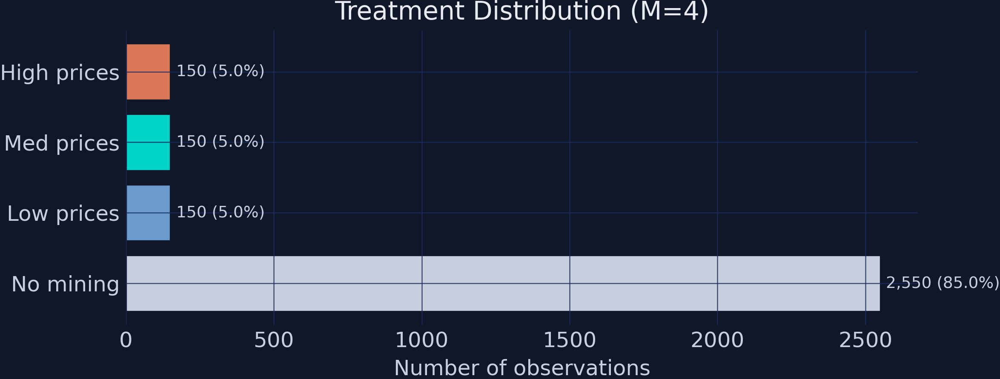
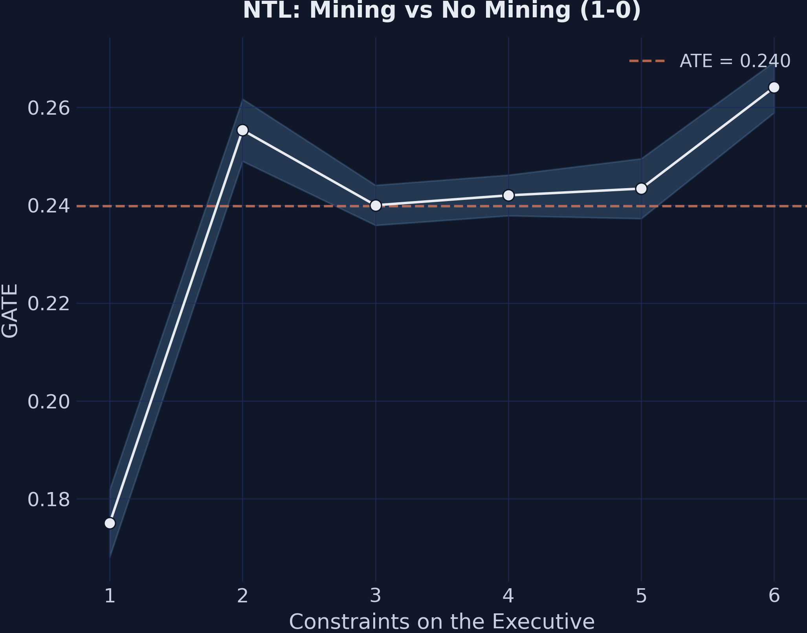
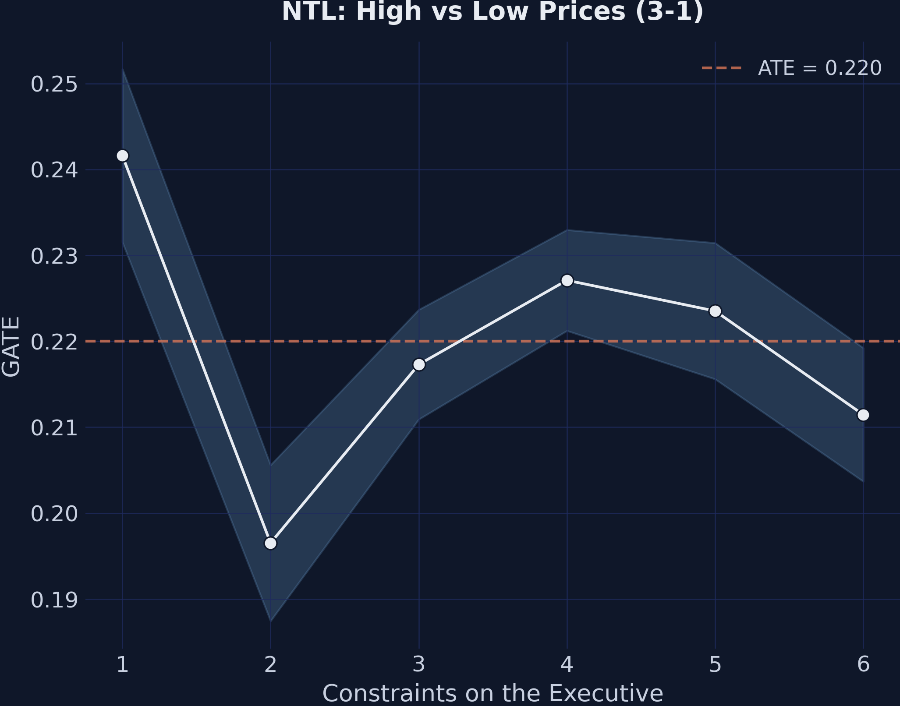
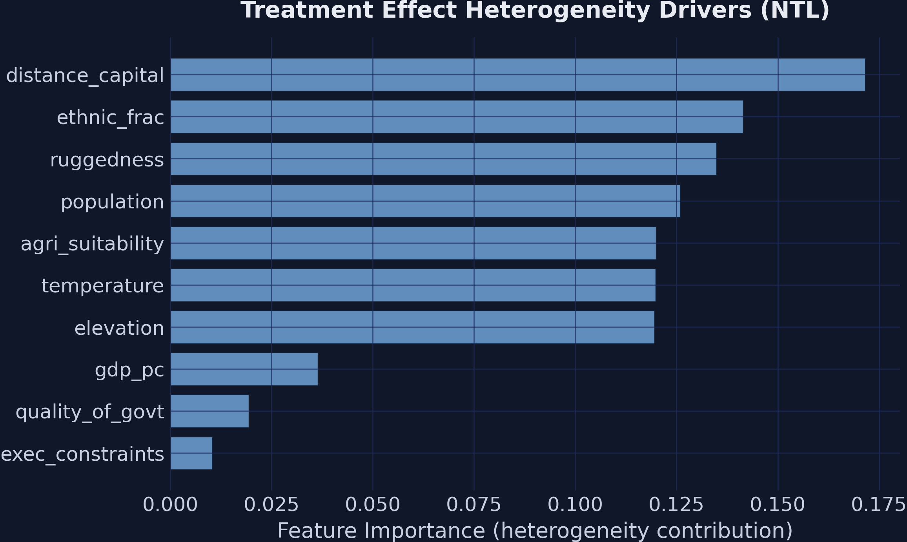
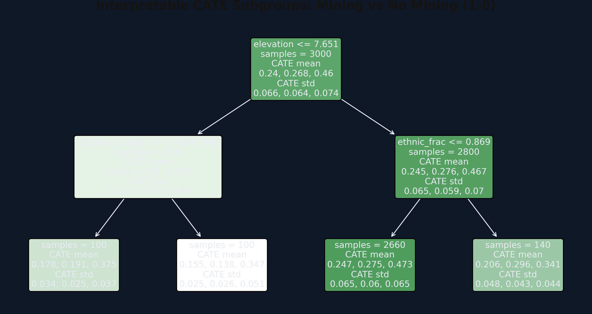

Heterogeneous treatment effects with EconML’s CausalForestDML
Nagoya University (GSID)
June 11, 2026
Act I
A district strikes a mine. Nighttime lights climb. But the district next door — same mineral, weaker institutions — barely flickers.
One average effect cannot describe both. The question is not “what is the effect of mining?” but for whom, and how much?
| Contrast | Naive | Truth | Bias |
|---|---|---|---|
| Mining vs none (1-0) | 0.109 | 0.250 | −0.141 |
| High vs low price (3-1) | 0.413 | 0.300 | +0.113 |
Mining districts differ systematically — worse geography, weaker institutions — so a raw difference-in-means confounds selection with effect.
\[\tau(\mathbf{x}) = E\{Y_i(1) - Y_i(0) \mid \mathbf{X}_i = \mathbf{x}\}\]
Where \(\tau(\cdot)\) bends with \(\mathbf{x}\), mining helps some districts more than others — that bend is the whole point.
Act II
Structure mirrors Hodler, Lechner & Raschky (2023); because we built the data, the identifying assumption holds by construction.

Treatment distribution. 2,550 control observations but only 150 per mining level — within-mining contrasts lean on just 300 rows.
\[Y_i = \tau(\mathbf{X}_i)\, T_i + g_0(\mathbf{X}_i, \mathbf{W}_i) + \varepsilon_i\]
\[T_i = m_0(\mathbf{X}_i, \mathbf{W}_i) + v_i\]
Subtract the predictable parts: \(\tilde Y_i = \tau(\mathbf{X}_i)\,\tilde T_i + \varepsilon_i\). The nuisance functions \(g_0, m_0\) exist only to be subtracted out.
\[\left.\frac{\partial}{\partial \eta} E[\psi(W; \tau, \eta)] \right|_{\eta = \eta_0} = 0\]
At the truth, the estimating equation is flat in the nuisances. A 10% error in \(\hat g_0\) enters \(\hat\tau\) at order \((0.10)^2 \approx 0.01\) — second order.
est_ntl = CausalForestDML(
model_y=GradientBoostingRegressor(n_estimators=200, max_depth=4),
model_t=GradientBoostingClassifier(n_estimators=200, max_depth=4),
discrete_treatment=True, categories=[0, 1, 2, 3],
n_estimators=500, min_samples_leaf=10,
honest=True, # split-chooser ≠ leaf-estimator → valid CIs
inference=True, # Bootstrap-of-Little-Bags standard errors
cv=5, # 5-fold cross-fitting
)
est_ntl.fit(Y, T, X=X, W=W,
groups=df['district_id'].values) # GroupKFold: no district leakage\[\{Y_i(0), Y_i(1), Y_i(2), Y_i(3)\} \perp T_i \mid (\mathbf{X}_i, \mathbf{W}_i)\]
Conditional Independence: once we know a district’s geography, institutions, country, and year, mining status is as good as random. We built the data, so it holds here — in real data it is untestable.
Act III
0.240
mining-vs-none ATE (1-0), SE 0.070, 90% CI [0.124, 0.355] · true value 0.250
−0.141
bias in the naive 1-0 estimate (0.109 vs truth 0.250) · the forest erases almost all of it
| Contrast | ATE | SE | Sig.? |
|---|---|---|---|
| Medium vs low (2-1) | 0.029 | 0.101 | no |
| High vs low (3-1) | 0.220 | 0.101 | 5% |
| High vs medium (3-2) | 0.191 | 0.109 | 10% |
Flat from low to medium, then a jump at high prices — shape discovery with no functional form pre-specified.

GATEs for the mining effect (1-0) by executive constraints. The upward slope: stronger institutions amplify the economic benefit of mining.

GATEs for the price effect (3-1) by executive constraints. The flat line: institutions do not moderate price effects (range 0.045).
Quality of government tells the same story as executive constraints — robust to the institutional measure.

Feature importance for heterogeneity. Geographic variables dominate split frequency, yet institutions are the true moderators.

Depth-2 CATE interpreter for the mining effect. Each leaf reports the mean estimated CATE for the subgroup defined by the splits above it.
Objection. A machine that picks controls cannot manufacture causal identification.
Response. Exactly right. \(\tau(\mathbf{x})\) is identified only under the Conditional Independence Assumption — the forest earns honest intervals, but it cannot rule out an unobserved confounder.